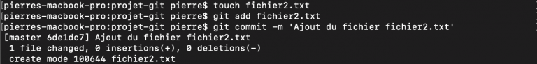
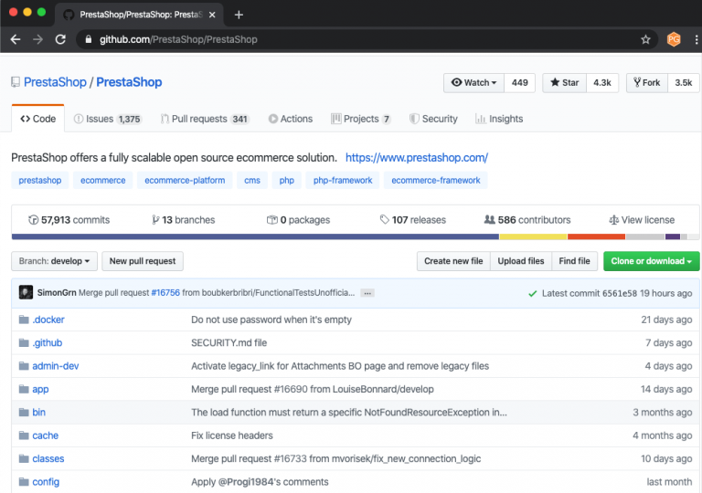

Git :
Cette page est l'ensemble des dix pages du cours de Pierre Giraud sur Git et GitHub.
Cette page est l'ensemble des dix pages du cours de Pierre Giraud sur Git et GitHub.
Dans ce cours, nous allons commencer par expliquer ce qu'est Git. Pour cela, nous allons définir ce qu'est un système de gestion de version et comprendre en quoi Git est différent des autres systèmes de gestion de version et pourquoi il est si populaire.
Nous allons ensuite découvrir les fonctionnalités principales de Git et apprendre à les utiliser. ous apprendrons notamment à créer un nouveau dépôt Git avec la commande git init ou à cloner un dépôt existant avec git clone, à observer l'état d'un projet avec git status, à ajouter des fichiers à l'index avec git add, à valider des modifications avec git commit, etc.
Nous étudierons également le système de branches de Git qui est l'un des composants qui rendent ce système de version très puissant et flexible.
Finalement, nous découvrivrons GitHub et apprendrons à gérer nos différents dépôts et à travailler sur des dépôts hébergés.
Git est un logiciel de versioning créé en 2005 par Linus Torvalds, le créateur de Linux.
Un logiciel de versioning, ou logiciel de gestion de version est un logiciel qui permet de conserver une historique des modifications effectuées sur un projet afin de pouvoir rapidement identifier les changements effectués et de revenir à une ancienne version en cas de problème.
Les logiciels de gestion de versions sont quasiment incontournables aujourd'hui car ils facilitent grandement la gestion de projets et car ils permettent de travailler en équipe de manière beaucoup plus efficace.
Parmi les logiciels de gestion de versions, Git est le leader incontesté et il est donc indispensable pour tout développeur de savoir utiliser Git.
Imaginez que vous possédiez un site web. À chaque fois que vous voulez modifier quelque chose sur le site ou tester une fonctionnalité, vous êtes obligé d'effectuer une sauvegarde du site avant l'implémentation afin de pouvoir le restaurer si quelque chose se passe mal.
Jusqu'ici, le procédé est contraignant car vous allez devoir effectuer une sauvegarde complète et restaurer la sauvegarde en cas de problème mais cela ne semble pas très complexe ni insurmontable.
Imaginez maintenant que vous soyez 10 à travailler sur le même site web, en vous occupant chacun de développer des fonctionnalités différentes mais qui peuvent être liées entre elles. L'organisation du travail est ici beaucoup plus complexe puisqu'il va falloir s'assurer :
Ici, l'idée la plus logique serait de mettre en place un serveur distant qui contiendrait l'historique des modifications faites pour chaque développeur afin que chacun ait accès aux avancées des autres. Chaque déveoppeur pourrait également copier l'intégralité du contenu du serveur pour travailler en local sur sa machine. On vient ainsi de créer un système de gestion de version décentralisé rudimentaire.
Grosso-modo, les logiciels de versioning et Git en particulier vont nous permettre d'effectuer ces opérations mais de manière beaucoupplus robuste et avec de nombreuses fonctionnalités supplémentaires très utiles (possibilité de synchroniser son dossier local avec le serveur, connexion aux autres projets et mise à jour des différences automatisée, etc.
Git permet de coordonner le travail entre plusieurs personnes en conservant un historique des changements effectués sur des fichiers.
Git permet à différentes versions d'un même fichier de coexister. Les développeurs travaillant avec Git ont accès à l'historique des modifications pour l'intégralité du projet et peuvent ainsi savoir quels changements ont été fait par rapport à leur version des fichiers, qui a fait ces changements, etc.
Les logiciels de gestion de version sont aujourd'hui tous construits sur l'un des deux modèles suivants : le modèle centralisé ou le modèle décentralisé encore appelé modèle distribué.
Le principe de base d'un modèle centralisé est la centralisation du code source lié au projet : la source du code du projet est hébergé sur un serveur distant central et les différents utilisateurs doivent se connecter à ce serveur pour travailler sur ce code.
Dans un modèle distribué, le principe de base est oppsé : le code source du projet est toujours hébergé sur un serveur distant mais chaque utilisateur est invité à télécharger et à héberger l'intégralité du code source du projet sur sa propre machine.
Le modèle distribué a été popularisé par Git et présente différents avantages notables par rapport au modèle centralisé :
Git est un logiciel de gestion de version. Git va nous permettre d'enregistrer les modifications effectuées sur un projet et de pouvoir retourner à une version précédente du projet.
Dans le langage des systèmes de gestion de version, la copie de l'intégralité des fichiers d'un projet et de leur version située sur le serveur central est appelé un dépôt. Git appelle également cela "repository" ou "repo" en abrégé.
GitHub est un service en ligne qui permet d'héberger des dépôts ou repo Git. C'est le plys grand hébergeur de dépôts Git du monde.
Pour récapituler, et afin d'être bien clair sur ce point : Git est un logiciel de gestion de version tandis que GitHub est un service en ligne d'hébergement de dépôts Git qui fait office de serveur central pour ces dépôts.
Nous verrons comment utiliser GitHub en détail dans ce cours après avoir appris à utiliser Git.
On peut utiliser différents types d'interfaces pour intsaller et pour utiliser Git. Dans ce cours, nous allons utiliser la console et donc un langage en lignes de commande plutôt qu'une interface graphique. Nous faisons ce choix pour différentes raisons :
Commençons donc par rapidement présenter la console. Une console est une interface qui nous permet d'envoyer des commandes, c'est-à-dire des ordres directement à notre système (notre ordinateur) afin qu'il les exécute. La console, c'est cet écran noir qui nous paraît très intimidant au premier abord :

Pour envoyer des commandes à notre système, nous utilisons un langage qui dépend du système utilisé. La plupart des commandes s'écrivent sur une ligne, d'où le terme de "langage en lignes de commande".
Au début de l'informatique, les opérations se faisaient toutes en ligne de commande. Ensuite, des interfaces graphiques pour utilisateurs (GUI) ont été développées afin de rendre l'informatique plus accessible à tous. L'interface graphique utilisateur correspond à tout ce que vous voyez lorsque vous regardez votre ordinateur (les dossiers et fichiers sous forme d'icônes, etc.) et aux opérations auxquelles vous avez accès (ouvrir le fichier, le supprimer, le renommer, ...).
La particularité des interfaces graphique utilisateur par rapport à la console est qu'elles utilisent principalement la souris pour les opérations là où la console force les utilisateurs à n'utiliser que le clavier pour envoyer des commandes. Cependant, en arrière plan, ce sont les mêmes opérations qui se passent lorsqu'on utilise une GUI ou la console.
L'interface graphique utilisateur n'est finalement là que pour apporter un niveau d'abstraction supplémentaire pour l'utilisateur par rapport au langage machine et pour faciliter l'utilisation des ordinateurs.
La question est donc : pourquoi utiliser la console plutôt que notre interface graphique utilisateur ? Tout simplement car certaines opérations sont beaucoup plus simples à réaliser via la console. Pour l'utilisation de Git, je vous renvoie aux raisons mentionnées ci-dessus.
On va donc pouvoir utiliser la console pour envoyer des ordres à notre système d'opération et pour effectuer différentes opérations courantes comme la création d'un dossier ou d'un fichier, sa suppression, le renommage, etc. et également utiliser la console pour exécuter les commandes spécifiques de Git après l'avoir installé.
Les commandes de Git vont une nouvelle fois être les mêmes pour tous les systèmes (Windows, Mac OS, etc.). Les commandes liées aux opérations sur le système comme la création d'un dossier vont elles pouvoir différentes d'un système à l'autre.
Pour ma part, j'utilise un Mac depuis des années et utilise donc des commandes UNIX tout comme Linux. Si vous utilisez Windows, je vous invite à installer un logiciel vous permettant d'avoir accès aux commandes UNIX ou à complètement changer de système d'opératuib si vous le pouvez. Pour ce cours, les différences de système ne devraient pas être gênantes car nous allons nous focaliser sur les commandes Git qui sont les mêmes pour tous, mais cela vous sera utile dans votre vie de développeur.
Commençons par ouvrir la console ensemble. Si vous êtes sous Mac, vous allez utiliser l'application Terminal disponible dans Applications → Utilitaires → Terminal. Si vous êtes sous Windows, vous allez utiliser l'Invite de commande (cmd) ou PowerShell selon la version que vous possédez.
Arrivé ici, vous allez pouvoir taper toutes sortes de commandes pour demander à votre système d'effectuer des opérations. Notez que la plupart des commandes qu'on va taper vont être dépendantes de notre emplacement dans le système. Par exemple, pour ajouter un dossier sur notre bureau, il va déjà falloir naviguer jusqu'au bureau via notre console.
À titre d'informaion, les commandes (UNIX) de base à connaître sont les suivantes :
Si vous désirez en savoir plus sur les commandes UNIX, je vous invite à lire le cours sur le shell Bash.
Voilà tout pour cepetit aparté sur la ligne de commande qui devrait vous permettre de comprendre beaucoup plus rapidement et plus facilement la suite de ce cours.
Entrons dans le vif du sujet et passons immédiatement à l'installation du logiciel Git. La façon la plus simple d'installer Git est de télécharger la dernière version sur le site officiel http://git-scm.com/downloads, d'ouvrir le fichier téléchargé et de suivre les instructions à l'écran en laissant toutes les valeurs par défaut.
Si vous êtes sous Windows, téléchargez plutôt la version de Git présente sur https://gitforwindows.org/. Cette version inclut un outil permettant d'émuler le comportement de Bash (le langage utilisé par Mac et Linux) et donc d'avoir accès aux mêmes commandes que moi.
Note : il est possible que la version de Git installée ne soit pas exactement la même que moi. Cela n'a aucune incidence et vous pouvez continuer à suivre le cours.
Une fois Git installé, nous allons paramétrer le logiciel afin d'enregistrer certaines données pour ne pas avoir à les fournir à nouveau plus tard.
Nous allons notamment ici renseigner un nom d'utilisateur et une adresse mail que Git devra utiliser ensuite.
Pour faire cela, nous allons utiliser notre première commande Git qui est la commande git config. Cette commande permet de voir et modifier les variables de configuration qui contrôlent tous les aspects de l'apparence et du comportement de Git.
Nous allons également passer une option --global à notre commande. Les options permettent de personnaliser le comportement par défaut de certaines commandes. Les options permettent de personnaliser le comportement par défaut de certaines commandes. Ici, l'option --global va nous permettre d'indiquer à Git que le nom d'utilisateur et l'adresse mail renseignés doivent être utilisés globalement (c'est-à-dire pour tout projet Git).
On va donc taper les commandes suivantes : git config --global user.name "Pierre Giraud" et git config --global user.email pierre.giraud@edhec.com à la suite pour renseigner un nom et une adresse email. Bien évidemment, utilisez votre propre nom et votre propre adresse email.

Pour vous assurer que vos informations ont bien été enregistrées, vous pouvez taper git config user.name et git config user.email. Les informations entrées devraient être renvoyées.
Voilà tout pour la configuration. Notez que certaines commandes Git ouvrent un éditeur, notamment celle qui vous demandent de saisir du texte. L'éditeur par défaut utilisé par Git est l'éditeur système qui est généralement Vi ou Vim.
J'utiliserai l'éditeur par défaut pour ce cours. Si vous souhaitez configurer un éditeur différent, vous pouvez entrer la commande git config --global core.editor nom_de_votre_editeur.
Un "dépôt" correspond à la copie et à l'importation de l'ensemble des fichiers d'un projet dans Git. Il exise deux façons de créer un dépôt Git :
Nous allons voir comment faire cela dans la suite de ce cours. Avant cela, je pense qu'il est bon de comprendre comment Git conçoit la gestion des informations ainsi que le fonctionnement général de Git.
La façon dont Git considère les données est assez différente de la plupart des autres systèmes de gestion de version.
Git pense les données à la manière d'un flux d'instantanés ou "snapshots". Grosso modo, à chaque qu'on va valider ou enregistrer l'état d'un projet dans Git, il va prendre un instantané du contenu de l'espace de travail à ce moment et va enregistrer une référence à cet instantané pour qu'on puisse y accéder par la suite.
Chaque instanté est stocké dans une base de donnée locale, c'est-à-dire une base de donnée située sur notre propre machine.
Le fait que l'on dispose de l'historique complet d'un projet localement fait que la grande majorité des opérations de Git peuvent être réalisées localement, c'est-à-dire sans avoir à être connecté à un serveur central distant. Cela rend les opérations beaucoup plus rapides et le travail de manière générale beaucoup plus agréable.
Comment Git fait-il pour suivre les modifications sur les ficiers d'un projet ? Pour comprendre cela, il faut savoir qu'un fichier peut avoir deux grands états dans Git : il peut être sous suivi de version ou non suivi.
Un fichier possède l'état "suivi" s'il appartenait au dernier instantané capturé par Git, c'est-à-dire s'il est enregistré en base. Tout fichier qui n'appartenait pas au dernier instantané et qui n'a pas été indexé et "non suivi".
Lorsqu'on démarre un dépôt Git en important un répertoire déjà existant depuis notre machine, les fichiers sont au départ tous non suivis. On va donc déjà devoir demander à Git de les indexer et de les valider (les enregistrer en base). Lorsqu'on clone un dépôt Git déjà existant, c'est différent puisqu'on copie tout l'historique du projet et donc les fichiers sont tous déjà suivis par défaut.
Ensuite, chaque fichier suivi peut avoir l'un de ces trois états :
Lors du démarrage d'un dépôt Git à partir d'un dépôt local, on demande à Git de valider l'ensemble des fichiers du projet. Un fichier est "validé" lorsqu'il est stocké dans la base de donnée locale. Lors du clonage d'un dépôt déjà existant, les fichiers sont enregistrés par défaut en base et ils sont donc validés par défaut.
Ensuite, lorsqu'on va travailler sur notre projet, on va certainement ajouter de nouveaux fichiers ou modifier des fichiers existants. Les fichiers modifiés vont être considérés comme "modifiés" par Git tandis que les nouveaux fichiers vont être "non suivis". Un fichier modifié est considéré comme "modifié" par Git tant qu'il n'a pas été indexé.
On dit qu'on "indexe" lorsqu'on indique à Git que le fichier modifié ou que le nouveau fichier doit faire partie du prochain instantané dans sa version actuelle.
Enfin, lorsqu'on demande à Git de prendre l'instantané, c'est-à-dire lorsqu'on lui demande d'enregistrer en base l'état du projet actuel (c'est-à-dire l'ensemble des fichiers indexés et non modifiés), les fichiers faisant partie de l'instantané sont à nouveau considérés comme "validés" et le cycle peut recommencer.
Les états de fichiers sont liés à des zones de travail dans Git. En fonction de son état, un fichier va pouvoir apparaître dans telle ou telle zone de travail. Tout projet Git est composé de trois sections : le répertoire de travail (working tree), la zone d'index (staging area) et le répertoire Git (repository).
Le répertoire de travail ou "working tree" correspond à une extraction unique ("checkout") d'une version du projet. Les fichiers sont extraits de la base de données compressée située dans le répertoire Git et sont placés sur le disque afin qu'on puisse les utiliser ou les modifier.
La zone d'index ou "staging area" correspond à un simple fichier, généralement situé dans le répertoire Git, qui stocke les informations concernant ce qui fera partie du prochain instantané ou du prochain "commit".
Le répertoire Git est l'endroit où Git stocke les méta-données et la base de données des objets de votre projet. C'est la partie principale ou le coeur de Git.
Le processus de travail va ainsi être le suivant : nous allons travailler sur nos fichiers dans le répertoire de travail. Lorsqu'on modifie ou crée un fichier, on peut ensuite choisir de l'indexer. Tant qu'un fichier n'est pas indexé, il possède l'état modifié ou est non suivi si c'est un nouveau fichier. Dès qu'il est indexé i.e que son nom est ajouté à la zone d'index, il possède l'état indexé. Finalement, on va valider ("commit") la version indexée de nos fichiers pour les ajouter au répertoire Git.
Pour retenir ces informations, vous pouvez vous aider des schémas ci-dessous (source : git-scm.com).

Lorsqu'on démarre avec Git, on a souvent déjà des projets en cours stockés localement sur notre machine ou sur serveur distant et pour lesquels on aimerait implémenter un système de gestion de version.
Dans ce cas là, nous allons pouvoir importer l'ensemble des ressources d'un projet dans Git. Pour la suite de cette leçon, je vais créer un répertoire "projet-git" qui se trouve sur mon bureau et qui contient deux fichiers texte vides "fichier1.txt" et "README.text". Ce répertoire va me servir de base pour les exemples qui vont suivre (ce sera le répertoire importé).
Je vous invite à créerle même répertoire sur votre machine. Vous pouvez le faire soit à la main, soit en utilisant la ligne de commandes comme ci-dessous (attention, toute mon installation et mon système sont en anglais, il est possible que vous ayez à remplacer "desktop" par "bureau" entre autres) :
La commande cd sert à de placer dans un répertoire. Dès qu'on est sur le bureau, on utilise mkdir pour créer un répertoire vide qu'on appelle "projet-git". On se place dans ce répertoire et on crée deux fichiers texte grâce à la commandeBash touch. On utilise enfin ls pour afficher le contenu du répertoire et s'assurer que tout a bien fonctionné.
Pour initialiser un dépôt Git, on utilise ensuite la commande git init comme ci-dessous. Cela crée un sous répertoire .git qui contient un ensemble de fichiers qui vont permettre à un dépôt Git de fonctionner.

Lorsqu'on utilise git init, Git nous renvoie un message en nous informant que le dépôt Git a bien été initialisé et qu'il est vide. C'est tout à fait normal puisque nous n'avons encore versionné aucun fichier (nous n'avons ajouté aucun fichier du répertoire en base).
On peut utiliser ici la commande git status pour déterminer l'état des fichiers de notre répertoire. Cette commande est extrêmement utile et c'est une de celles que j'utilise le plus personnellement :
Ici, git status nous informe que notre projet possède deux fichiers qui ne sont pas sous suivi de version ("untracked") et qui sont les fichiers "README.txt" et "fichier1.txt". Il nous dit aussi qu'aucun fichier n'a été validé ("commit") en base pour le moment ni ajouté pour validation. La commande git status nous informe également sur la branche sur laquelle on se trouve ("master" ici). Nous reparlerons des branches plus tard.
L'étape suivante va donc ici être d'indexer nos fichiers afin qu'ils puissent ensuite être validés, c'est-à-dire ajoutés en base et qu'on puisse ainsi avoir un premier historique de version.
Pour indexer des fichiers, on utilise la commande git add. On peut lui passer un nom de fichier pour indexer le fichier en question, le nom d'un répertoire pour indexer tous les fichiers du répertoire d'un coup ou encore un "fileglob" pour ajouter tous les fichiers correspondant au schéma fourni.
Les fileglobs utilisent les extensions de chemin de fichier. Grosso-modo, cela signifie que certains caractères comme * et ? vont posséder une signification spéciale et nous permettre de créer des schémas de correspondances. Le caractère * par exemple correspond à n'importe quel caractère. Lorsque j'écris git add *.txt, je demande finalement à Git d'ajouter à l'index tous les fichiers du projet qui possèdent une extension .txt quelque soit leur nom.
Si on relance une commande gt status, on obtient les informations suivantes :
git status nous dit qu'on a maintenant deux nouveaux fichiers ajoutés à l'index. La commande git add permet en fait de faire plusieurs choses : elle permet d'indexer des fichiers déjà sous suivi de version et de placer sous suivi des fichiers non suivi (en plus de les indexer).
Ici, on est certains que nos deux nouveaux fichiers ont bien été ajoutés à l'index puisqu'ils apparaissent dans la section "changes to be committed" ("modifications à valider").
Pour valider ces fichiers et les ajouter en base, on va maintenant utiliser la commande git commit comme cela :

Lorsqu'on utilise git commit sans argument, une nouvelle fenêtre s'ouvre en utilisant l'éditeur par défaut qui est dans la majorité des cas VIM.
Ici, on nous demande d'ajouter un message avec notre commit. Bien documenter chaque commit permet aux auteurs et aux différents contributeurs à un projet de rapidement comprendre les modifications et de pouvoir les valider. C'est une part essentielle de Git. Ici, j'ajoute simplement le message "Version initiale du projet".
Une fois le message entré, si votre éditeur est bien VIM, il faut appuyer sur la touche esc" pour sortir du mode insertion puis taper :wq et entree pour valider et quitter ou :x et entree ou tout simplement ZZ.
Une fois sorti de VIM, un message s'affiche avec des informations sur le commit effectué.
On nous informe ici qu'on se situe sur la branche master, qu'il s'agit du premier commit (root-commit) et on nous donne sa somme de contrôle (4ed866e) qui permet de l'identifier de manière unique. On nous dit également que deux fichiers ont été modifiés et que 0 lignes ont été ajoutées ou supprimées dans ces fichiers.
Si on effectue à nouveau un git status, voici le message renvoyé :
Git nous informe désormais qu'il n'y a plus aucun fichier à vider, ce qui signifie que tous les fichiers sont sous suivi de version et sont enregistrés en base et qu'aucune modification n'a été approtée à ces fichiers depuis le dernier commit.
La deuxième façon de démarrer un dépôt Git est de cloner localement un dépôt Git déjà existant. Pour cela, on va utiliser la commande git clone.
En pratique, dans la grande majorité des cas, nous clonerons des dépôts Git distants, c'est-à-dire des dépôts hébergés sur serveur distants pour pouvoir contribuer à ces projets.
Cependant, nous pouvons également cloner des dépôts locaux. Nous parlerons des dépôts distants et apprendrons à les cloner lorsqu'on abordera GitHub. Pour le moment, contentons nous d'essayer de cloner notre dépôt "projet+git" tout juste créé.
Pour cela, on va se placer sur le bureau. Comme je suis pour le moment situé dans mon répertoire "projet-git", j'utilise la commande Bash cd .. pour atteindre le répertoire parent 'c'est-à-dire mon bureau).
J'utilise ensuite la commande git clone en lui passant d'abord le chemin complet du projet à cloner (qui correspond à son nom dans notre cas puisque le répertoire du projet est également sur le bureau) ouis le chemin complet du clone qui doit être créé. On va choisir de créer le clone sur le bureau par simplicité et on va donc simplement passer un nom à nouveau. Appelons le clone "projet-git-2" par exemple comme ceci :

On peut cd dans le répertoire du projet et effetuer un ultime git status pour s'assurer de l'état des fichiers du répertoire :
Comme vous pouvez le voir, le dépôt a bien été cloné puisque les fichiers du répertoire projet-git-2 sont déjà bien tous sous suivi de version et sont stockés en base.
À ce niveau, nous avons donc d'un côté notre projet contenant un ensemble de ficheirs et de ressources sur lesquelles on travaille ainsi qu'un dépôt Git qui sert à gérer les différentes versions de notre projet.
En continuant à travailler sur notre projet, nous allons être amenés à ajouter, modifier, voire supprimer des fichiers. On va indiquer tous ces changements à Git pour qu'il conserve un historique des versions auquel on pourra ensuite accéder pour revenir à un état précédent du projet (dans le cas où une modification entraîne un bogue par exemple ou n'amène pas le résultat souhaité).
À chaque fois qu'on souhaite enregistrer une modification de fichier ou un ajout de fichier dans le dépôt Git, on va devoir utiliser les commandes git add et git commit comme on a pu le faire précédemment.
J'attire ici votre attention sur un point important : le commit (la validation / l'enregistrement en base de données) d'un fichier se basera sur l'état de ce fichier au moment du git add.
Cela signifie que si vous effectuez une commande git add sur un fichier, puis vous modifiez à nouveau le fichier, puis vous effectez un git commit, c'est le fichier dans son état au moment du dernier git add qui sera validé et les dernières modifications ne seront donc pas enregistrées dans le dépôt Git.
Si vous souhaitez enregistrer toujours la dernière version d'un fichier, pensez donc bien toujours à effectuer un git add juste avant un git commit. Pour mettre en un coup les fichier modifiés et déjà sous souvi dans la zone d'index puis pour les valider, vous pouvez également utiliser git commit avec une option -a comme ceci : git commit -a. Cela vous dispense d'avoir à taper git add.
Concernant la suppression de fichisers, il existe plusieurs situations possibles en fonction de ce que vous souhaitez réellement faire : voulez-vous simplement exclure un fichier du suivi de version mais le conserver dans votre projet ou également le supprimer du projet ?
Avant tout, notez que simplement supprimer un fichier de votre dossier avec une commande Bash rm par exemple ne suffira pas pour que Git oublie ce fichier : il apparaîtra dans chaque git status dans une section "changes not stages for commit" (modifications qui ne seront pas validées).
On peut s'en assurer en faisant le test. Pour cela, commençons par ajouter un nouveau fichier dans notre répertoire "projet-git". On peut faire cela avec une commande Bash touch.
Comme le fichier vient tout juste d'être ajouté, on va devoir l'indexer pour qu'il soit sous suivi puis le valider.
Ici, j'utilise la commande git commit avec une option -m qui me permet de renseigner directement le message lié à mon commit plutôt que de devoir le faire dans VIM.
Le fichier est désormais sous suivi et la dernière version est enregistrée en base. Essayons maintenant de l'effacer avec une commande rm par exemple et tapons un nouveau git status :

Comme vous pouvez le voir, Git continue de suivre le fichier et la suppression simple du fichier ne sera pas validée comme changement par Git.
Pour supprimer un fichier et l'exclure du suivi de version, nous allons utiliser la commande git rm (et non pas simplement une commande Bash rm).

Pour simplement exlure un fichier du suivi Git mais le conserver dans le projet, on va utiliser la même commande git rm mais avec cette fois-ci une option --cached.



Ici, le fichier a bien été exclu du suivi Git mais existe toujours dans notre projet. On va ensuite pouvoir modifier ce fichier (lui ajouter du texte par exemple) comme n'importe quel fichier et Git ne se préoccupera pas des modifications.

Le contenu de la zone d'index est ce qui sera proposé lors du prochain commit. Imaginons qu'on ait ajouté un fichier à la zone d'index par erreur. Pour retirer un fichier de l'index, on peut utiliser git reset HEAD nom-du-fichier.
À la différence de git rm, le fichier continuera d'être suivi par Git. Seulement, le fichier dans sa version actuelle va être retiré de l'index et ne fera donc pas partie du prochain commit.
Regardez plutôt l'exemple ci-dessous :
Ici, on ajoute le fichier fichier2.txt à l'index et on le passe donc sous suivi de version. On valide cela avec git commit puis on modifie le contenu de notre fichier et on ajoute la dernière version de notre fichier à la zone d'index pour qu'il fasse partie du prochain commit. Finalement, on change d'idée et on veut retirer cette version de la zone d'index. On fait cela avec git reset HEAD fichier2.txt.
Lorsqu'on dispose d'un projetet qu'on souhaite utiliser Git pour effectuer un suivi de version, il est courant qu'on souhaite exclure certains fichiers du suivi de version comme certains fichiers générés automatiquement, des fichiers de configuration, des fichiers sensibles, etc.
On peut informer Git des fichiers qu'on ne souhaite pas indexer en créant un fichier .gitignore et en ajoutant les différents fichiers qu'on souhaite ignorer. Notez qu'on peut égalemnt mentionner des schémas de noms pour exclure tous les fichiers correspondant à ce schéma et qu'on peut même exclure le contenu entier d'un répertoire en écrivant le chemin du répertoire suivi d'un slash.
On peut également renommer un fichier de notre projet depuis Git en utilisant cette fois-ci une commande git mv ancien-nm-fichier nouveau-nom-fichier.
On peut par exemple renommer notre fichier "README.txt" en "LISEZMOI.txt" de la manière suivante:
Le fichier a bien été renommé dans notre répertoire et le changement est prêt à être validé dans le prochain commit.
La manière la plus simple de consuter l'historique des modifications Git est d'utiliser la commande git log. Cette commande affiche la liste des commits réalisés du plus récent au plus ancien. Par défaut, chaque commit est affiché avec sa somme de contrôle SHA-1, le nom et l'e-mail de l'auteur, la date et le message du commit.
La commande git log supporte également de nombreuses options. Certaines vont pouvoir être très utiles comme par exemple les options -p, --pretty, --since ou --author.
Utiliser git log -p permet d'afficher explicitement les différences introduites entre chaque validation.

L'option --pretty permet, avec sa valeur oneline, d'afficher chaque commit sur une seule ligne ce qui peut faciliter la lecture dans le cas où de nombreux commits ont été réalisés.

L'option --since permet de n'afficher que les modifications depuis une certaine date (on peut lui fournir différents formats de date comme 2.weeks ou 2019-10-10 par exemple).
L'option --author permet de n'afficher que les commits d'un auteur en particulier.
Parfois, on voudra annuler une validation (un commit), notamment lorsque la validation a été faite en oubliant des fichiers ou sur les mauvaises versions de fichiers.
La façon la plus simple d'écraser un commit est d'utiliser la commande git commit avec l'option --amend. Cela va pousser un nouveau commit qui va remplacer le précédent en l'écrasant.
Par exemple, dans notre projet, on peut imaginer qu'on souhaite commit les changements effectués précédemment sur le fichier README.txt qu'on souhaite également réintégrer le fichier fichier2.txt dans l'index.
Pour cela, on effectue un git commit :
Ici, on s'aperçoit après coup qu'on a oublié de réintégrer le fichier fichier2.txt. On peut utiliser une commande git add puis git commit --amend pour remplacer le commit précédent :
Note : l'éditeur par défaut va s'ouvrir pour vous permettre de modifier le message du commit si vous le souhaitez.
L'un des principaux intérêts d'utiliser un logiciel de gestion de vision est de pouvoir "roll back", c'est-à-dire de pouvoir revenir à un état antérieur enregistré d'un projet.
Après un commit, on va continuer à travailler sur nos fichiers et à les modifier. Parfois, certaines modifications ne vont pas apporter les comportements espérés et on voudra revenir à l'état du fichier du dernier instantané Git (c'est-à-dire au dernier état enregistré). On va pouvoir faire cela avec la commande générale git checkout -- nom-du-fichier ou la nouvelle commande spécialisée git restore.
Imaginons qu'on modifie le texte de notre fichier LISEZMOI.txt avec une commande echo et >>.

On se rend ensuite compte que ce texte ne convient pas et on souhaite revenir à l'état du fichier tel qu'il a été enregistré pour la dernière fois dans Git.Pour cela, on utilise simplement git restore LISEZMOI.txt.
Créer une branche, c'est en quelque sorte comme créer une "copie" de votre projet pour développer et tester de nouveles fonctionnalités sans impacter le projet de base.
Dans la plupart des système de contrôle de version, justement, une copie physique de la totalité du répertoire de travail est effectuée, ce qui rend la création de branches contraignante et en fait une opération lourde.
Git a une approche totalement différente des branches qui rend la création de nouveles branches et la fusion de branche très facile à réaliser. Une branche, dans Git, est simplement un pointeur vers un commit (une branche n'est qu'un simple fichier contenant les 40 caractères de l'empreinte SHA-1 du commit sur lequel elle pointe).
Pour rappel, lorsqu'on effectue un commit, Git stocke en fait un objet commit qui contient les nom et prénom de l'auteur du commit, le message renseigné lors de la création du commit ainsi qu'un pointeur vers l'instantané du contenu indexé et des pointeurs vers le ou les commits précédant directement le commit courant.
Un pointeur est un objet qui contient l'adresse d'une donnée stockée quelque part. On peut utiliser le pointeur pour accéder à la donnée en question.
La branche par défaut dans Git s'appelle master. Cette branche master va se déplacer automatiquement à chaque nouveau commit pour pointer sur le dernier commit effectué tant qu'on reste sur cette branche.
Notez que la branche master n'est pas une branche spéciale pour Git : ele est traitée de la même façon que les autres branches. L'idée est que lorsqu'on tape une commande git init, une branche est automatiquement créée et que le nom donné à cette branche par Git par défaut est "master". On pourrait très bien la renommer ensuite mais ça ne présente généralement aucun intérêt.
En résumé, une branche est un pointeur vers un commit en particulier. Un commit est un objet qui contient un pointeur vers l'instantané du contenu indexé ainsi que des pointeurs vers le ou les commits le précédant directement.
Ainsi, créer une nouvelle branche dans Git crée simplement un nouveau pointeur plutôt que de recopier l'intégralité du répertoire de travail.
Pour créer une nouvelle branche, on utilise la commande git branch nom-de-la-branche. Cette syntaxe va créer un nouveau pointeur vers le dernier commit effectué (le commit courant). À ce stade, vous allez donc avoir deux branches (deux pointeurs) vers le dernier commit : la branche master et la branche tout juste créée.

Pour déterminer quel pointeur vous utilisez, c'est-à-dire sur quelle branche vous vous trouvez, Git utilise un autre pointeur spécial appelé HEAD. HEAD pointe sur la branche master par défaut. Notez que la commande git branch permet de créer une nouvelle branche mais ne déplace pas HEAD.
Nous allons donc devoir déplacer explicitement HEAD pour indiquer à Git qu'on souhaite basculer sur une autre branche. On utilise pour cela la commande git checkout suivi du nom de la branche sur laquelle on souhaite basculer.
Note : On peut également utiliser git checkout -b pour créer une branche et basculer immédiatement dessus. Cela est l'équivalent d'utiliser git branch puis git checkout.
HEAD pointe maintenant vers notre branche test. Si on effectue un nouveau commit, la branche test va avancer automatiquement tandis que master va toujours pointer sur le commit précédent. C'est en effet la branche sur laquelle on se situe lors d'un commit qui va pointer sur ce commit.


On peut revenir sur notre branche master en tapant à nouveau une commande git checkout master. Cela replace le pointeur HEAD sur la branche master et restaure le répertoire de travail dans l'état de l'instantané pointé par le commit sur lequel pointe master.


Si on modifie alors le répertoire de travail et qu'on effectue un nouveau commit, les deux branches master et test vont diverger. On va donc avoir deux branches pointant vers des instantanés qui ont enregistré le projet dans deux états différents.
Précédemment, on a vu comment créer différentes branches pour un projet. Généralement, on va créer de nouvelles branches pour travailler sur de nouvelles fonctionnalités pour notre projet sans impacter la ligne de développement principale (représentée par notre branche principale).
On va donc développer nos fonctionnalités sur des branches connexes et les tester jusqu'à ce qu'on soit sûrs qu'il n'y a pas de problème et on va finalement réintégrer ces fonctionnalités développées au sein de notre ligne de développement principale.
Pour faire cela, il va falloir rapatrier le contenu des branches créées dans la branche principale. On peut faire ça de deux manières avec Git : en fusionnant les branches ou en rebasant.
Commençons par nous concentrer sur la fusion de branches.
Précédemment, on avait fini avec deux branches master et test divergentes. On parle de divergence car les deux branches possèdent un ancêtre commit en commun mais pointent chacune vers de nouveaux commits qui peuvent correspondre à des modifications différentes d'un même fichier du projet.
Revenons un peu en arrière pour commencer avec un cas plussimple et imaginons que notre projet soit dans cet état :
Ici, on a une branche test qui pointe sur un commit commitN+1 et une branche master qui pointe sur un commit commitN. commitN est l'ancêtre direct de commitN+1 et il n'y a donc pas de problème de divergence.
Pour fusionner nos deux branches, on va se placer sur master avec une commande git checkout puis taper une commande git merge avec le nom de la branche qu'on souhaite fusionner avec master.
Dans ce cas, "fusionner" nos deux branches revient finalement à faire avancer master au niveau du commit pointé par test. C'est exactement ce que fait Git et c'est ce qu'on appelle un "fast forward" (avance rapide).
Il ne nous reste alors plus qu'à effacer notre branche test. On peut faire cela en utilisant la commande git branch -d.
Reprenons maintenant la situation précédente avec deux branches dont les historiques divergent. On peut représenter cette situation comme cela :
Pour fusionner deux branches ici on va à nouveau se placer dans laquelle on souhaite fusionner puis effectuer un git merge.
Ici, comme la situation est plus complexe, il me semble intéressant d'expliquer comment Git fait pour fusionner les branches. Dans ce cas, Git réalise une fusion en utilisant 3 sources : le dernier commit commun aux deux branches et le dernier commit de chaque branche.
Cette fois-ci, plutôt que de simplement faire un fast forward, Git crée automatiquement un nouvel instantané dont le contenu est le résultat de la fusion ainsi qu'un commit qui pointe sur cet instantané. Ce commit s'appelle un commit de fusion et est spécial puisqu'il possède plusieurs parents.
Notez que dans le cas d'une fusion à trois sources, il se peut qu'il y ait des conflits. Cela va être notamment le cas si une même partie d'un fichier a été modifiée de différentes manières dans les différentes branches. Dans ce cas, lors de la fusion, Git nous alertera du conflit et nous demander de le résoudre avant de terminer la fusion des branches.
On peut utiliser une commande git status pour voir précisément quels fichiers sont à l'origine du conflit. Imaginons par exemple que nos deux branches possèdent un fichier LISEZMOI.txt et que les deux fichiers LISEZMOI.txt possèdent des textes différents. Git va automatiquement "fusionner" les contenus des deux fichiers de base à la suite l'un de l'autre avec des indicateurs de séparation.
On peut alors ouvrir le fichier à la main et choisir ce qu'on conserve (en supprimant les parties qui ne nous intéressent pas par exemple). Dès qu'on a terminé l'édition, on va taper une commande git add pour marquer le conflit comme résolu. On n'aura alors plus qu'effectuer un git commit pour terminer le commit de fusion.
Git nous fournit deux moyens de rapatrier le travail effectué sur une branche vers une autre : on peut fusionner ou rebaser. Nous allons maintenant nous intéresser au rebasage, comprendre les différences entre la fusion et le rebasage et voir dans quelle situation utiliser une opération plutôt qu'une autre.
Reprenons notre exemple précédent avec nos deux branches divergentes.
Plutôt que d'effectuer une fusion à trois sources, on va pouvoir rebaser les modifications validées dans commitN+1 dans notre branche master. On utilise la commande git rebase pour récupérer les modifications validées sur une branche et les rejouer sur une autre.
Dans ce cas, Git part à nouveau du dernier commit commun aux deux branches (l'ancêtre commun le plus récent) puis récupère les modifications effectuées sur la branche vers laquelle on souhaite rebaser notre travail dans l'ordre dans lequel elles ont été introduites.
Le résultat final est le même qu'avec une fusion mais l'historique est plus clair puisque toutes les modifications apparaissent en série même si elles ont eu lieu en parallèle. Rebaser rejoue les modifications d'une ligne de commits sur une autre dans l'ordre d'apparition, alors que la fusion joint et fusionne les deux têtes.
Gardez cependant à l'esprit que rebaser équivaut à supprimer des commits existants pour en créer de nouveaux (qui sont similaires de par leur contenu mais qui sont bien des entités différentes). Pour cette raison, vous ne devez jamais rebaser des commits qui ont déjà été poussés sur un dépôt public.
En effet, imaginons la situation suivante :
Dans ce cas, des problèmes vont se poser puisque les gens qui ont travaillé à partir des commits de départ ne vont pas les retrouver dans le projet s'ils veulent récupérer les mises à jour et lorsqu'ils vont pousser leur modification sur le dépôt public les commits effacés vont être réintroduits ce qui va créer un historique très confus et potentiellement des conflits.
GitHub est la plus grande plateforme d'hébergement de projets Git au monde. Vous serez probablement amené à travailler avec GitHub et il est donc important de comprendre comment ce service fonctionne.
Commencez déjà par noter que GitHub est un outil gratuitpour héberger du code open source, et propose également des plans payants pour les projets de code privés.
Pour utiliser GitHub, il suffit de créer un compte gratuitement sur le site https://github.com.
Le grand intérêt de GitHub est de faciliter la collaboration à une échelle planétaire sur les projets : n'importe qui va pouvoir récupérer des projets et y contribuer (sauf si le propriétaire du projet ne le permet pas bien entendu).
Sur GitHub, nous allons en effet notamment pouvoir cloner des projets (dépôts) publics, dupliquer ("fork") des projets ou encore contribuer à des projets en proposant des modifications ("pull request").
Sur GitHub, nous allons pouvoir contribuer aux projets publics d'autres personnes ou créer nos propres dépôts publics afin que d'autres personnes contribuent à nos propres projets. Commençons déjà par nous familiariser avec l'aspect contributeur de GitHub.
GitHub est une gigantesque plateforme collaborative qui héberge des dépôts Git. Pour rechercher des dépôts auxquels contribuer ou pour rechercher des fonctionnalités intéressantes qu'on aimerait récupérer, on peut aller dansl'onglet "explore" ou chercher un dépôt en particulier grâce à la barre de recherche en haut du site.
Les étapes pour contribuer à un projet (le cycle de travail) vont toujours les mêmes :
Pour copier un dépôt (repository) GitHub sur nos machines, il suffit d'utiliser l'option "clone URL" de GitHub pour récupérer le lien du repo puis d'utiliser la commande git clone [URL] dans notre console.
On peut également utiliser l'option "fork" de GitHub. Un fork est une copie d'un dépôt distant qui nous permet d'effectuer des modifications sans affecter le projet original.
La différence entre un fork et un clone est que lorsqu'on fork une connexion existe entre notre fork (notre copie) et le projet original. Cela permet notamment de pouvoir très simplement contribuer au projet original en utilisant des pull requests, c'est-à-dire en poussant nos modifications vers le dépôt distant afin qu'elles puissent être examinées par l'auteur du projet original.
Lorsqu'on clone un projet, on ne va pas pouvoir ensuite récupérer les changements à partir du projet d'origine ni contribuer à ce projet à moins que le propriétaire du projet d'origine ne nous accorde des droits spéciaux (privilèges).
Le fork est une fonctionnalité très utile puisqu'elle permet à n'importe quelle personne de pouvoir dupliquer un projet et de contribuer à ce projet tout en garantissant à l'auteur du projet l'intégrité du projet original car ce sera à lui de valider ou pas les différentes pull requests (requêtes de tirage) des contributeurs.
Pour contribuer à un projet, on va donc très souvent le copier en le forkant. Cela créeune copie du projet dans notre espace GitHub. On va ensuite créer une branche thématique et effectuer nos modifications.
Pour cela, une fois sur la page du projet forké dans notre espace personnel Git, on va cliquer sur le bouton de liste "branch" et ajouter un nom pour créer une nouvelle branche.

Rappelez-vous qu'on utilise les branches pour expérimenter et apporter des modifications sans polluer notre branche principale (master par défaut). Lorsqu'on crée une branche à partir de la branche master, on effectue une copie (un instantané ou snapshot) de master telle qu'elle était à ce moment-là. Si quelqu'un d'autre apporte des modifications à la branche principale pendant qu'on travaille sur notre branche, il faudra qu'on récupère ces mises à jour.
Note importante : on peut également bien évidemment cloner le projet localement (sur notre machine) afin de pouvoir travailler dessus hors connexion puis renvoyer ensuite les modifications vers notre projet forké. Dans cette partie, je vais cependant me concentrer sur ce qu'il est possible de faire depuis GitHub seulement.
Pour modifier un fichier, on va cliquer sur le fichier en question puis sur l'icône en forme de crayon à droite. Cela ouvre un éditeur.


On peut alors modifier les fichiers puis commit nos modifications dès qu'on les juge satisfaisantes. Pour cela, il suffit de renseigner un message de commit et de cliquer sur le bouton "commit changes" en bas de la page.
Une fois qu'on a terminé nos modifications, on va pouvoir les proposer. Pour cela, on va ouvrir une requête de tirage ou "pull request".
Pour effectuer un pull reques, on clique sur l'onglet "pull requests" puis sur "compare & pull request" ou sur "new pull request".
Effectuer une requête de tirage correspond à demander à quelqu'un d'examiner et d'extraire votre contribution et de la fusionner dans sa branche. Les demandes d'extraction montrent des différences de contenu des deux branches. Les modifications, ajouts et soustractions sont affichés en vert et en rouge.
Suite à un pull request, le propriétaire du projet examine notre contribution et une discussion peut s'engager s'il souhaite qu'on effectue d'autres modifications.
La dernière étape du processus de travail correspond à fusionner notre branche thématique dans notre branche principale afin de réincorporer les changements effectués et d'avoir une branche principale à jour.
Pour cela, on peut cliquer sur le bouton "merge request" suite à notre pull request.
La deuxième face de GitHub correspond à la création de dépôt sur GitHub afin que des gens collaborent dessus. Pour créer un nouveau dépôt sur GitHub, il suffit cliquer sur l'icône "+" située en haut à droite puis sur "new repository". Une page s'ouvre vous permettant de créer un nouveau dépôt.
Note : vous pouvez également importer un dépôt en cliquant sur "import repository".
Sur la page de création de dépôt, vous devez renseigner un nom et une description pour le dépôt. Vous avez également une option "Initialise with a README", qui vous permet de cloner votre dépôt sur votre machine. Cette option està cocher uniquement dans le cas où vous n'avez pas encore créé le dépôt en question sur votre machine.
GitHub permet de contribuer simplement à des projets ou de laisser les gens contribuer à ces propres projets.
La plupart des gens qui utilisent GitHub vont cependant souvent préférer travailler hors ligne (en local; sur leur machine) plutôt que de devoir être constamment connecté à GitHub et de devoir passer par cette plateforme pour effectuer toutes les opérations.
Pour travailler localement, il suffit de cloner un projet après l'avoir forké. On va ensuite pouvoir effectuer nos différentes modifications sur notre machine.
Pour synchroniser les modifications faites depuis notre machine avec notre dépôt distant (dépôt GitHub), il suffit de faire un git commit depuis le dépôt local et de push (envoyer) les modifications sur le dépôt GitHub à l'aide de la commande git push [nom-distant] [nom-local]. Taper git push origin master par exemple revient à envoyer les modifications situées dans ma branche master vers origin.
Pour récupérer en local les dernières modifications du dépôt GitHub, on va utiliser la commande git pull [nom-distant] [nom-local].